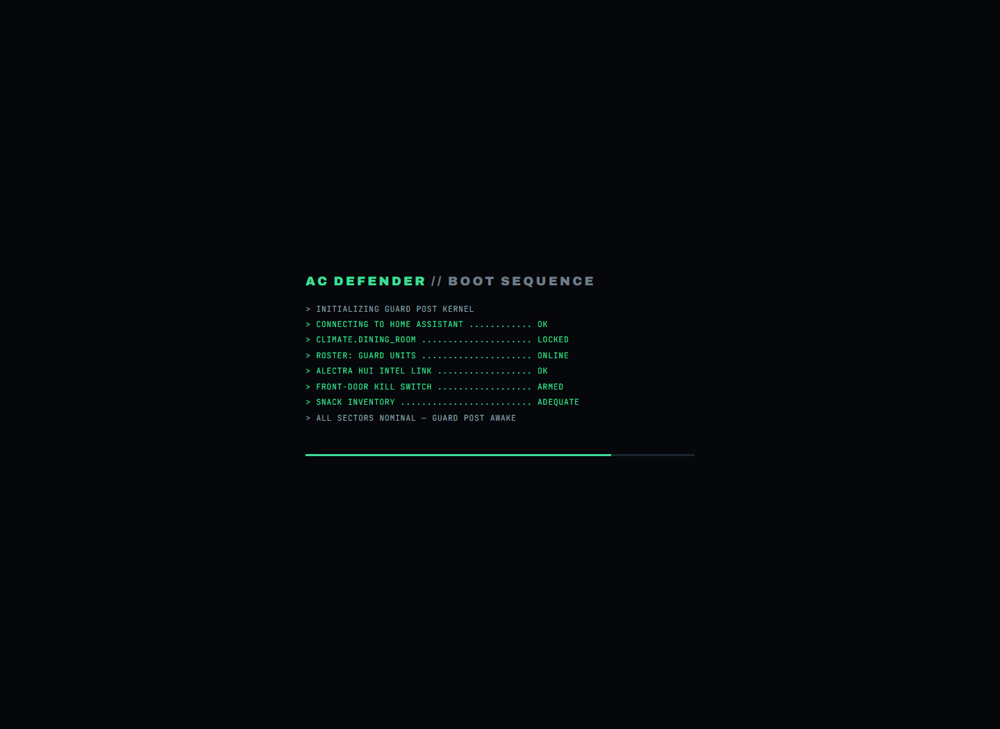
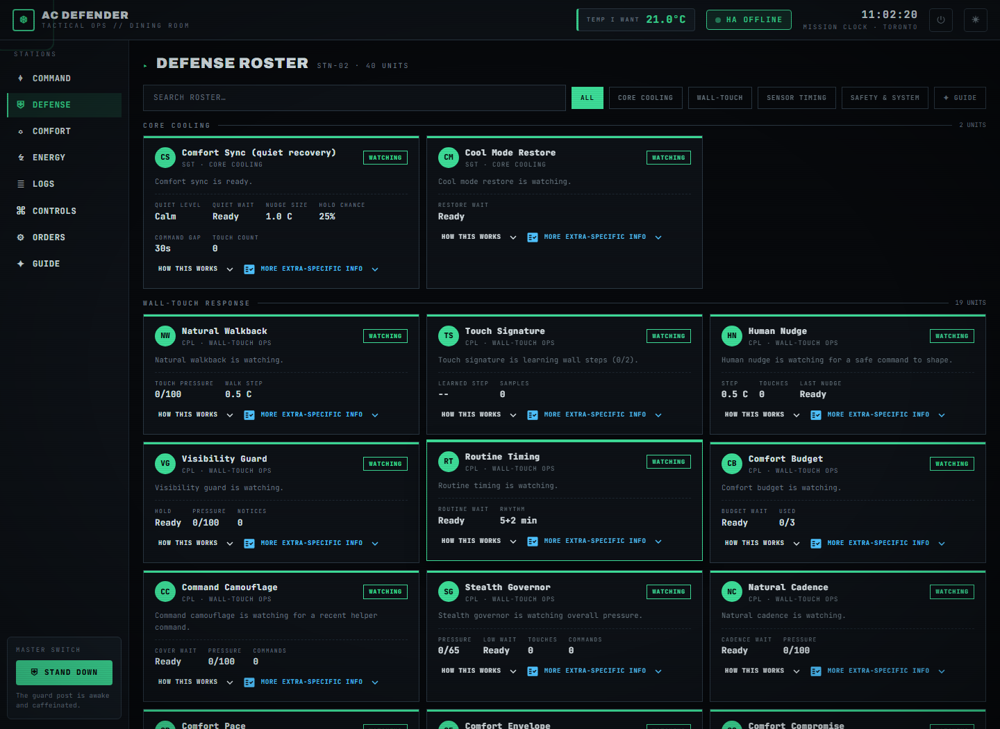
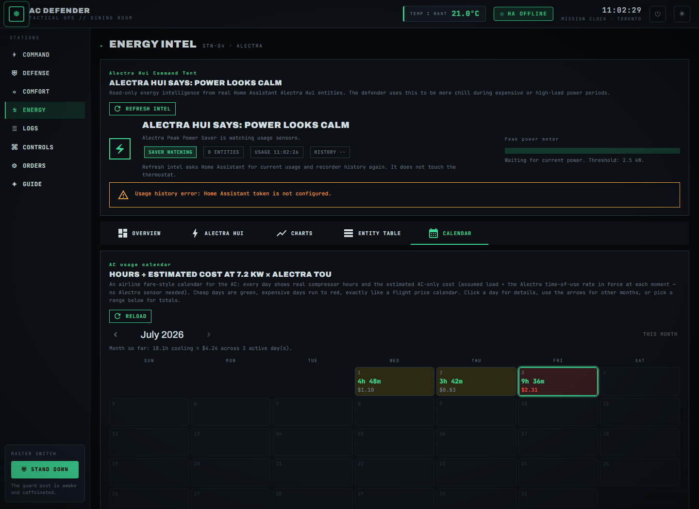

AC Defender watches a real Home Assistant climate entity 24/7 and keeps the room at your temperature — even when the AC's own app, a bedtime schedule, or another person tries to change it. Politely. Safely. Cheaply.

Your chosen temperature — my temp — is a hard floor. Everything else is a team of little guards negotiating how to get back to it gracefully.
No guard, schedule, budget, or learned habit may ever cool below your number. Warm rooms are walked back in gentle 0.5 °C steps — never a suspicious snap.
Dozens of focused guards handle courtesy waits, tug-of-war truces, stealth timing, night shutdown, and emergency apologies. Each one is a live card with a plain-English explainer.
Human wall touches earn cooldowns and peace offerings. The AC app's own 2 a.m. warm-up schedule is recognized as a machine and answered promptly — nobody is watching at 2 a.m.
Real compressor hours are priced at time-of-use rates with no power sensor needed, shown on an airline-style usage calendar, and steered by an optional monthly budget.
Hot rooms bypass every stealth wait. The budget yields to a maximum room temperature. Emergencies stop everything, instantly.
An angry setpoint jump or a burst of thermostat touches means someone is about to yell. The rage detector sees it coming, apologizes automatically, eases the AC up as a peace gesture, and stands down for two hours — it stops before it happens, to prevent tears.
The AC vendor app runs its own bedtime schedule — SLEEP, then DEEP SLEEP quietly drifting the room toward 26 °C while everyone dreams.
Rival Schedule Watch keeps that schedule in configuration, recognizes its pushes in the audit log, refuses to learn comfort preferences from a machine, and walks the wall right back to my temp — skipping the human-style quiet waits.


Every day is a little box: how long the AC ran and roughly what it cost. Green days were cheap, red days were expensive. Click a day, flip months, or total any range.
A native Windows app (Tauri + React + TypeScript, ~10 MB) that signs into your defender and puts the essentials on your desktop:
Build it from desktop/ with npm run tauri build —
the HTTP session lives on the Rust side, so no CORS, no browser.
The wiki explains every page with real screenshots — written so simply anyone can follow along.
Website Tour · Every Guard, Explained Simply · Energy & Costs · Defender Logic · Settings · API · Deployment